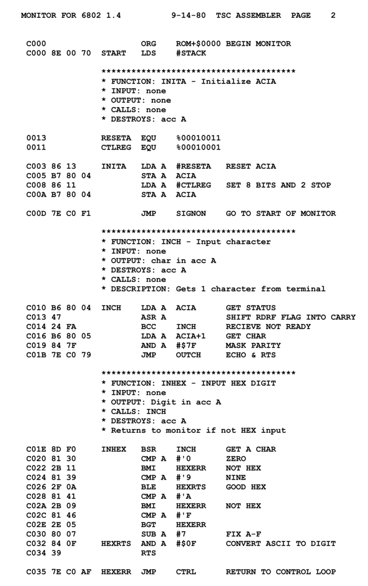
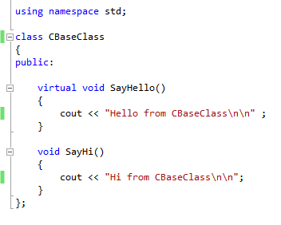
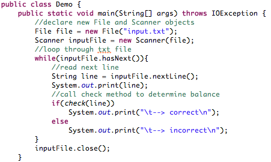
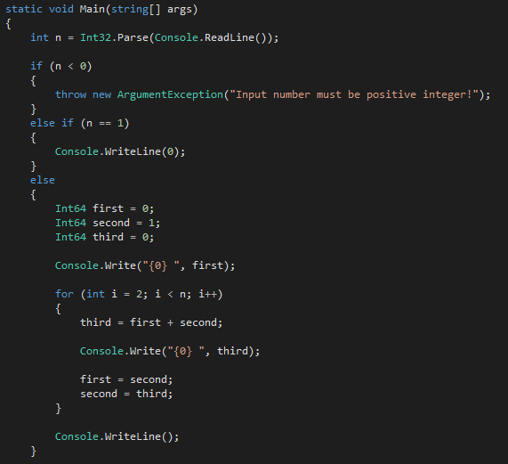

Езикът асемблър
Първите езици:
- 1951 – Regional Assembly Language
- 1952 – Autocode
- 1954 – IPL (предшественик на LISP)
- 1955 – FLOW-MATIC (води до COBOL)
- 1957 – FORTRAN (първият компилатор)
- 1957 – COMTRAN (предшественик на COBOL)
- 1958 – LISP
- 1958 – ALGOL 58
- 1959 – FACT (предшественик на COBOL)
- 1959 – COBOL
- 1959 – RPG
- 1962 – APL
- 1962 – Simula
- 1962 – SNOBOL
- 1963 – CPL (предшественик на C)
- 1964 – BASIC
- 1964 – PL/I
- 1966 – JOSS
- 1967 – BCPL (предшественик на C)
1970-1980: разцветът на езиците за програмиране:
- 1968 – Logo
- 1969 – B (предшественик на C)
- 1970 – Pascal
- 1970 – Forth
- 1972 – C
- 1972 – Smalltalk
- 1972 – Prolog
- 1973 – ML
- 1975 – Scheme
- 1978 – SQL

Клас написан в C++. Езикът често се нарича "C с класове".
1980-те: консолидация, модули, производителност:
- 1980 – C++
- 1983 – Ada
- 1984 – Common Lisp
- 1984 – MATLAB
- 1985 – Eiffel
- 1986 – Objective-C
- 1986 – Erlang
- 1987 – Perl
- 1988 – Tcl
- 1988 – Mathematica
- 1989 – FL (Backus)
90-те години на 20. век: Ерата на интернета:

Програма в Java, която чете файл и прави проверки на всеки ред.
- 1990 – Haskell
- 1991 – Python
- 1991 – Visual Basic
- 1993 – Ruby
- 1993 – Lua
- 1994 – CLOS
- 1995 – Ada 95
- 1995 – Java
- 1995 – Delphi (Object Pascal)
- 1995 – JavaScript
- 1995 – PHP
- 1996 – WebDNA
- 1997 – Rebol
- 1999 – D
Модерни езици и тенденции:

Програма, написана на C#, която намира първите N на брой числа в редицата на Фибоначи.
- 2000 - ActionScript e обектно ориентиран език, създаден от Macromedia Inc. По синтаксис е близък до JavaScript.Използва се основно за уеб сайтове използващи платформата Adobe Flash Player и уеб сайтове с вградени SWF файлове.
- 2001 - C# e обектно-ориентиран език за програмиране, разработен от Microsoft, като част от софтуерната платформа .NET. Първата версия на C# е разработена през- 2001 г. и е пусната официално в употреба през 2002 г.
- 2003 - Groovy е обектно ориентиран програмен език, който върви под Java платформата (JVM). Езикът е динамичен и има сходни черти с други скриптови езици, като Python, Ruby, Perl и Smalltalk. Езикът може да се използва като скриптов език за Java платформата. Groovy има вградена поддръжка на различни езици за описание на данни (markup languages) като XML и HTML, което се постига посредством вграден DOM синтаксис. Това позволява дефиницията и манипулирането на много типове хетерогенни данни със сходни характеристики, точен синтаксис и методология на програмирането.
- 2003 - Scala е статично типизиран език, използва type inference механизъм, който сериозно намалява типовите декларации. Scala е чисто обектно-ориентиран език. Включва в себе си много елементи от функционалното програмиране: higher order functions, function objects, pattern matching, tail recursion.
- 2005 - F# е език за програмиране за платформата .NET и Microsoft, който е използван за първи път във Visual Studio 2010. F# е обектно-ориентираното програмиране, но е първият пълноценен език за функционално програмиране (предназначен за технически изчисления, и за разработка на приложения за финансовите и научни среди) за .NET, и има за цел да постигне лесна интеграция с някои стари императивни езици като C + + и Java.
- 2005 - Go е разработен от Google.Използва се за паралелни изчисления и ускоряване на работата на компютрите.Gоне е създаден с цел за разработка на софтуер.Go е статичен, компилиращ се език с автоматично освобождаване на ресурсите ( garbage-collected). Синтаксиса му е близък до този на C. Обектно ориентиран език без класове. Има само един цикъл – for, конструкции if и Switch.
- 2011 - Dart. Създателят на Dart е Google. Идеята е този език да замени JavaScript. Dart е базиран на класовете и е предназначен за по-лесна разработка и поддръжка на уеб приложения. Основното предимство на езика е сходството му със синтаксиса на JavaScript. Dart позволява висока производителност за браузъри и среди, вариращи от мобилни устройства до сървъри.
- 2014 - Swift е многопарадигмен компилируем програмен език, създаден от Apple за разработване на приложения за iOS и Mac. Swift е заместител на езика Objective-C. Но за разлика от Objective-C Swift не създава указатели (pointers).
-
2015 - Rust е проект на Mozilla и е фокусиран върху безопасната работа с паметта и осигуряване на висок паралелизъм при изпълнение на програмите. Структурата на програмния език Rust напомня на C++, но съществено се различава по синтаксиса и семантиката. Rust автоматично управлява работата с паметта.